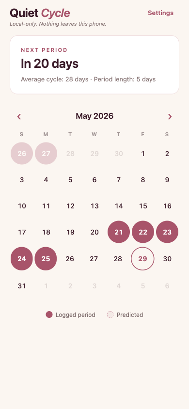
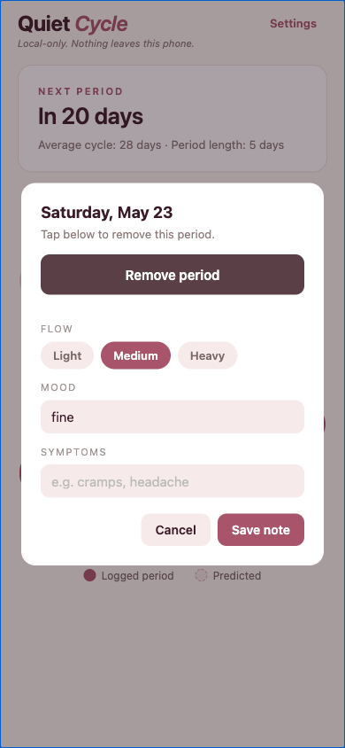

Local-only by design
There is no account, no login, no server. No record outside this phone to subpoena or breach. Uninstall to wipe.
Now in beta · iOS via Expo Go
A period tracker that stays on this device. No account, no cloud, no ads, no data resale. Just a calendar, a prediction, and your notes.
Local-onlyNo accountNo cloud syncOpen source
Features
The whole feature set, plainly listed — no upsells gating the basics.
There is no account, no login, no server. No record outside this phone to subpoena or breach. Uninstall to wipe.
Rolling average of your last six cycles, with outliers filtered before averaging so one anomalous gap doesn't drag the whole prediction.
Logged days are filled, predicted days dashed. Today is outlined. Days with a note get a dot underneath.
Flow (light / medium / heavy), free-text mood, free-text symptoms. Notes are tied to dates and stay on this device.
Average cycle length and typical period length are configurable starting estimates. Once you have history, the app prefers your actual averages.
Each logged period freezes its end date when created, so changing the default period length in Settings won't retroactively reshape your history.
How to play
A few short steps. The app gets out of your way after that.
On the calendar, tap any day. The app marks the start of a period there and auto-fills the next N-1 days using your typical period length.
Once you have a logged start, the dashed circles show when the app expects the next period to begin. Predictions sharpen with more cycles.
Tap a day to open the day editor. Set flow level (light / medium / heavy), type a mood, type any symptoms. Saved with that date only.
Tap Settings (top right) to change your typical cycle length and period length. New entries pick up the new defaults; old entries stay frozen.
Tap any day inside a logged period and choose Remove period. The whole period (start + frozen days) is deleted.
Screenshots
Captured from the running app at iPhone 14 viewport.

